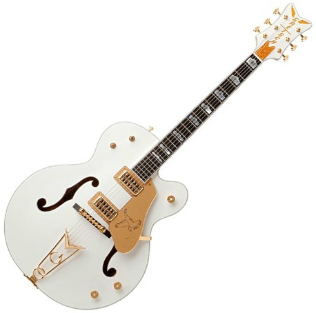

기타
- 기타의 역사
- 통기타 종류
- 일렉기타 종류
할로우바디(Hollow Body)
문자 그대로 속이 비었다는 뜻이다. 통기타에 픽업을 장착한 것이 아닌 엄연한
일렉기타의 한 종류이다 하지만 통기타에서 일렉기타로 발전하는 과정에서
그 과도기적 산물인 할로우바디 기타는 통기타와 선을 확실히 그을 수 없는 악기이다.
30년대에 통기타에 마이크를 테이프로 고정해서 소리를 늘리던 것이 곧 픽업달린
통기타가 등장하고, 머지않아 깁슨에서 최초의 일렉기타를 개발한다.
특히 ES시리즈는 이 때부터 개발되어 제일 오래된 일렉 시리즈임에도 아직까지 개량되어
생산되고 있는 기타 역사의 산증인이라 할 수 있다.
할로우바디는 풀 할로우와 세미 할로우로 나눌 수 있다.
풀 할로우는 문자 그대로 통기타처럼 속이 텅 비었고 세미 할로우는 바디 가운데
부분이 '센터블럭'으로 차있다. 당연히 세미 할로우의 울림이 덜하고 풀 할로우바디는
언 플러그로 쳐도 통기타와 같은 큰 울림을 얻을 수 있다.
할로우바디는 '재즈기타'라고 부르기도 한다. 하지만 일반적인 락에서도 충분히 많이 쓰이며
특히 세미 할로우바디는 메탈까지는 아니지만 하드락까지 커버할 수 있다.
실제로 락무대에서 종종 볼 수 있다. 크런치톤에서는 발군의 소리를 들려 주기도 하는데
할로우바디 계열은 하울링이 쉽게 발생하므로 다루기가 까다롭다는 단점이 있다.
그래서 왜곡시켜 서스테인을 늘리는 들라이브를 걸기 보다는 생톤에 가까운
재즈, 블루스 등에 많이 쓰인다.

뒤로